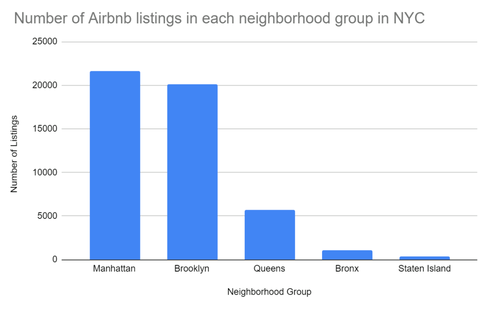

Madison Colvin
SQL & R Data Analysis
NYC Airbnb

Overview
My Database Management course culminated in a final project where we were to explore a dataset of our choice using data analysis methods taught throughout the quarter. I completed this project in a group of three, where we utilized R to gain meaningful insights and SQL to extract valuable information from a NYC Airbnb dataset. This project was centered around gaining real experience in data analysis and utilizing data mining techniques we had covered during the class.
Description of the Dataset
Airbnb is a home rental company that allows its customers to find, list and rent short-term accomodations. Airbnb works as an online broker, connecting individuals to accommodations and taking a commission on each booking. Airbnb was founded in 2008 by Joe Gebbia and Brian Chesky, who were struggling to make rent and stumbled upon the idea for the company while renting out 3 air mattresses in their loft to visitors during a crowded San Francisco convention. Since their 2008 launch, the company has flourished and has become a household name. Currently valued at a staggering $31 billion, the company has become immensely successful, boasting over 7,000,000 listings on their website and has over 150 million regular users. Airbnb is now available in 65,000+ cities and in more than 220+ countries and regions worldwide. In addition to providing vacation rentals, Airbnb has recently grown to expand their services to include experiences, adventures and tours. Airbnb has found a unique and niche market space within the tourism and hospitality industry, giving them a competitive edge over their competition.
Over the last decade, Airbnb has become a household name in the hospitality industry and is a service that many of us have likely used, making it extremely relevant to our lives. Through the analysis of The New York City Airbnb Open Database we plan to dive deeper into the granular data and derive meaningful, and insightful information that can be utilized to develop a greater understanding of Airbnb and their business model. Our goal is to decipher what factors directly impact and determine an Airbnb’s listing price, availability and number of reviews an Airbnb receives. By finding the source of these questions, we hope to make it easier for individuals to find high quality Airbnb’s within their price range.
A Closer Look at the NYC Airbnb Dataset
The dataset we chose to analyze explores New York City Airbnb listings, activity and metrics in New York City in 2019. The New York City Airbnb Open Database consists of over 48,000 entries and metrics from 2019, with 16 attributes, or columns, describing each entry. Some of the data includes the neighborhood where the Airbnb listing is located, the room type, price, total number of reviews, number of reviews per month, number of host listings, and the availability of the Airbnb. Within the dataset there are five neighborhood groups: Bronx, Brooklyn, Manhattan, Queens and Staten Island, where an Airbnb can be located.
The following list describes each variable listed in the dataset.
- Idlisting: ID
- Name:name of the listing
- Host_id: host ID
- Host_name: name of the host
- Neighbourhood_group: location
- Neighbourhood: area
- Latitude: latitude coordinates
- Longitude: longitude coordinates
- Room_type: listing space type
- Price:price in dollars
- Minimum_nights: minimum number of nights
- Number_of_reviews: number of total reviews
- Last_review: last review
- Reviews_per_month: # of reviews per month
- Calculated_host_listings_count: # of listings per host
- Availability_365: # of days listing is available per year
Methodology and Data Modeling
Before diving deep into our data analysis it was important to preprocess the dataset and visualize the data that we were going to be working with. By visualizing the dataset, we hoped to get a better understanding of the type of information we were going to be working with, thus, helping us choose what predictive models to use when moving forward.
Through data visualization we found interesting information and insights when viewing the data. For example, we found that Manhattan had the most Airbnb listings for a neighborhood group, with 21,661 listings, while Staten Island had the smallest number of Airbnb listings for a neighborhood group, with only 373 listings in the neighborhood.
Additionally, when viewing the popularity of room type for an Airbnb listing, an Airbnb with the “Entire house/apt” for rent was the most common listing, with a “Private room” very closely behind, and a “Shared room” only making up a small fraction of the total dataset.
Another metric that was helpful to visualize was viewing average price per night by neighborhood group. From this graph, we were able to determine that Manhattan doesn’t only account for the most Airbnb listings in NYC, but they also have the highest average price per night, with the average listings being $196.89 per night. Manhattan's large number of Airbnb listings could possibly be due to the fact that they have a substantially higher nightly rental rate that they can charge for a listing. The cheapest neighborhood to rent an Airbnb is the Bronx, where the average Airbnb listing goes for $87.49 for a nightly stay.

To analyze the data, we wanted to see what factors contributed most when determining the price, availability and number of reviews an Airbnb listing has received. Due to this goal we will be using “price”, “availability_365”, “number_of_ reviews” and “reviews_per_month” as outcome variables and we will be running four separate predictive models to get to the bottom of these questions. When choosing a predictive model for our dataset, we decided to go with linear regression as linear regression is used when outcome variables are numerical and continuous. In our case, price, availability_365, number_of_ reviews and reviews_per_month are all numerical variables with a variety of different outcomes. In these instances, linear regression will be a superior model to logit, as logistic regression is only used when the outcome variable is categorical, or has a set number of options.
To supplement the information gained through our linear regression models, a decision tree was also implemented for “price”, “availability_365”, “number_of_ reviews” and “reviews_per_month”. An advantage of running a decision tree is that it includes the consideration of all possible outcomes of a decision based on the given outcome variable. The decision tree follows each path an outcome variable could take to a conclusion. By doing this, it creates a complete analysis of the decisions made along each tree branch and identifies which decision nodes significantly impact the outcome variable’s result. Through implementing a decision tree, we hope to capture any important insights that we might have missed during our linear regression and determine what variables are significant factors when determining the output of each tested outcome variable.
Obstacles & How We Overcame Them
The biggest obstacle we encountered while running our analysis was working with a significantly larger data set than we had previously in class. This challenged us to find creative ways to code our models and regressions in order to have them run efficiently at this larger scale. We specifically struggled with creating decision trees for this data. First most of the data is not numeric and does not contain any boolean values, therefore, the variables we could include in these types of regressions was limited. Secondly, due to the size of the dataset our computers were not able to produce a tree with the given method in class. Therefore, we turned to other methods of retrieving decision trees as we truly thought this visual interpretation of the data was critical to our analysis. During our analysis of the dataset we relied heavily on our linear regression data that clearly provided us with the key variables that contributed to our three areas of interest: price, number of reviews and availability.
Another area that presented challenges was choosing what variables to include in our regression models. Again, due to the size of the data, we couldn’t run regression with all the variables, and because of the large number of variables in the dataset we knew that some were going to be more impactful than others. We used the ggplot function to visualize the data beforehand and to gain a better knowledge and understanding of the data we were working with. The data visualization gave us a good indication as to which variables we should investigate for each area of interest. For numeric values we were able to compute the correlation between the variables and our end value to see which were important. We also computed several combinations of the variables in the regression in order to see which variables were clearly the most impactful and therefore required more scrutiny.
Analysis
Reviews & Reviews per Month Findings:
When running the linear regression on reviews_per_month, we found that certain neighborhoods had a significant impact on the number of reviews an Airbnb receives per month. Some of these neighborhoods included Chelsea, Chinatown, Financial District, Midtown, East Harlem, and Theater District. In addition to neighborhoods, room_type (private and shared room), minimum_nights, number_of_reviews, calculated_host_listings_count, and availability_365 were all significant factors in determining the number of reviews a NYC Airbnb receives per month. To dive deeper into what factors determine the number of reviews an Airbnb receives, it was crucial to run a predictive model that used the number_of_reviews, or total number of reviews an Airbnb received in 2019, as the outcome variable. When running the linear regression with number_of_reviews as the outcome variable, many of the same neighborhoods found when running the regression with reviews_per_month also had a significant effect on the total number of reviews. In addition to neighborhoods, room type (private and shared room), price, reviews_per_month, calculated_host_listings_count, and availability_365 were all significant factors in determining the total number of reviews a NYC Airbnb received in 2019. From analyzing the overlapping findings from the two review based regressions, we can confidently conclude that neighborhoods such as the Financial District, Theater District, and Midtown are all significant when determining the number of reviews an Airbnb receives. Additionally, room_type (private and shared room), calculated_host_listings_count, and availability_365 were all significant factors in each regression, therefore, proving to be vital indicators in determining the number of reviews an Airbnb receives. In addition to the linear regressions, two decision trees were run using reviews_per_month and number_of_reviews as the outcome variables to help visualize what variables play a key role in the number of reviews an Airbnb receives.

Availability Findings:
In an effort to find out which area/neighborhood provides the most available housing and what factors will affect the outcome availability of an Airbnb in New York City, we conducted a linear regression model. From this regression model, we can see that room type, price, minimum nights, number of reviews, reviews per month, and calculated host listings count are important factors that have a direct impact on the number of days an Airbnb in New York City is available. We can also conclude from this model that some neighborhoods such as Jamaica and Corona in Queens, Kips Bay in Manhattan, Cypress Hill and Flat Bush in Brooklyn are neighborhoods that provide the most available Airbnbs for tourists. These sites are also associated with higher prices since they are close to tourist destinations in their respective neighborhood group, which makes sense intuitively because tourists are generally willing to pay more for accommodation if they can get to these sites faster and easier. Additionally, the relationship between price and availability are positively correlated; that is, the more days that are available, the higher the total prices are. Among the three most popular locations, that is Queens, Manhattan, and Brooklyn (highest number of available Airbnbs), the average price of an Airbnb per night is the highest in Manhattan. In addition, while examining the relationship between room type and availability, the most available room type is entire home or apartment, rather than shared rooms or private rooms. Logically, this also makes sense as people are willing to pay a higher premium for more privacy to enhance their traveling experiences.

Price Findings:
To see which variables affect the price of Airbnb’s in NYC we ran a linear regression with price as the outcome variable. From this regression we were able to interpret which variables have the largest impact on the price and in what way they affect the price. Room_type has the largest impact on the price in this regression model. When a host rents a private room it decreases price in comparison to a host that rents their entire house. If the host rents a shared room the price decreases by even more compared to a host that rents their entire house. Intuitively this made sense with our assumption that people are willing to pay more for the entire house due to the increase in privacy. Additionally the dataset doesn’t provide the size of the Airbnb’s but we can assume that an entire house would have more space then a private room or shared room. Therefore the price is most likely also increasing due to the entire house Airbnb’s being larger. To further support this finding we created a decision tree to visualize the relationship between price and room_type. This tree shows that the entire house options equated to three times the price on average. Neighbourhood_group also had a large impact on the price of an Airbnb. Intuitively, this also made logical sense with the assumption that different areas of the city are more expensive due to their proximity to in demand destinations and the location would drive up the price of an Airbnb in specific neighbourhood_groups. Staten Island compared to the Bronx had a negative impact on price, and is the only neigbourhood_group that decreased in price when compared to the Bronx. Queens and Brooklyn had a positive effect on price, leading to an increase in the price of an Airbnb if they are located in these neighbourhood_groups compared to the Bronx. Lastly, Manhattan had a positive relationship and a significantly higher increase in price occurs if an Airbnb is located in Manhattan compared to the Bronx. Availiability_365 and number_of_reviews also impacted the price of an Airbnb but much less per increase than the other variables discussed above. When the number of days available increases the price also increases, this could be because people are able to book the Airbnb for a longer period of time. Traditionally, when traveling people don’t want to change accommodations during their stay so they are only looking at places that fit their dates. With more availability, there will be more people looking at the hosts listing. With every new review there is a slight decrease in price of an Airbnb. This relationship could be due to the fact that people tend to write reviews when they are upset with their stay rather than when they are pleased. This could be a key indicator why reviews decrease price rather than increase as we were initially expecting. From the linear regression we found that room_type and neighbourhood_group had the largest impact on the price of Airbnb in NYC.
Future Analysis & Improvement
While the current dataset provides useful information about price, availability, reviews, and room type information, in the future it would be useful to include additional data to help draw deeper and more insightful conclusions. Some data that would be helpful to have for additional analysis, but not limited to, includes:
- Season Related Data
- Host Rating Data
- Positive & Negative Reviews
To better analyze the dataset and provide more useful insights for tourists, one thing That would be useful to add to the existing dataset is season-related data. Such as, in different neighbourhoods, what time of the year is the price the highest. If this data is analyzed, we can tell what time is the most cost-effective for tourists to travel in NYC. In addition, season-related data tells us what time of year provides the most available housing in the city.
With hosts’ rating data, we can categorize hosts by their star rating, on a scale from zero to five. This may help tourists better understand hosts’ rating and other people’s living experience in respective areas, better helping them with their decision-making before booking an Airbnb. Additionally, this new information would be helpful in gathering additional insights and creating more accurate models.
In the current dataset, there are currently two variables for reviews: review_per_month, which tracks the number of reviews an Airbnb listing received on average per month in 2019, and number_of_reviews, which tracks the total number of reviews an Airbnb received in 2019. Unfortunately, the dataset does not specify whether these reviews are positive or negative. Due to this lack of information, it is next to impossible to determine if an Airbnb is popular according to their reviews, or if they are struggling. To help bridge this gap in the data, it would be helpful to add two variables, one with a count of total number of positive reviews and one with a count of total negative reviews. This new information would allow us to draw more precise and accurate conclusions.
With this additional information added to the dataset, when running future regressions we could draw more accurate conclusions and help tourists make more informed decisions on travel timing, hosts screening and selection, and affordability of different Airbnbs in New York City.